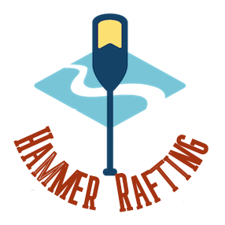

Overview
Purpose
Hammer Rafting Company is a family owned business that wants to let the rest of the world know how beautiful the rafting is in the state of Arizona. We believe adventure awaits for those looking to find it. Our goal is to share our passion with the rest of the world. We believe by building a website we will be able to better accomplish this goal.
Audience
Hammer Rafting Company seeks to attract and interact with outdoors enthusiasts who enjoy white water rafting. Our typlical customer will have already been on other rafting trips. They are seeking new rivers to conquer and people to share that experience with. Our users will typically access our website from their phones or tablets.
Branding
Website Logo
Style Guide
Color Palette
Palette URL:
https://coolors.co/01a7c2-deb986-a43312-bdd5ea-384d48| Primary | Secondary | Accent 1 | Accent 2 |
|---|---|---|---|
| [#01A7C2] | [#DEB986] | [#A43312] | #BDD5EA |
Typography
Heading Font: Roboto
Paragraph Font: Roboto
Normal paragraph example
The best Whitewater Rafting in Colorado, White Water Rafting Company offers rafting on the Colorado and Roaring Fork Rivers in Glenwood Springs. Since 1974, we have been family owned and operated, rafting the Shoshone section of Glenwood Canyon and beyond.
Colored paragraph example
Trips vary from mild and great for families, to trips exclusively for physically fit and experienced rafters. No matter what type of river adventures you are seeking, White Water Rafting Company can make it happen for you.
Navigation
2022 Dates
Wireframes
Home